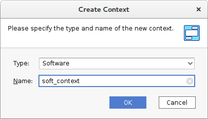
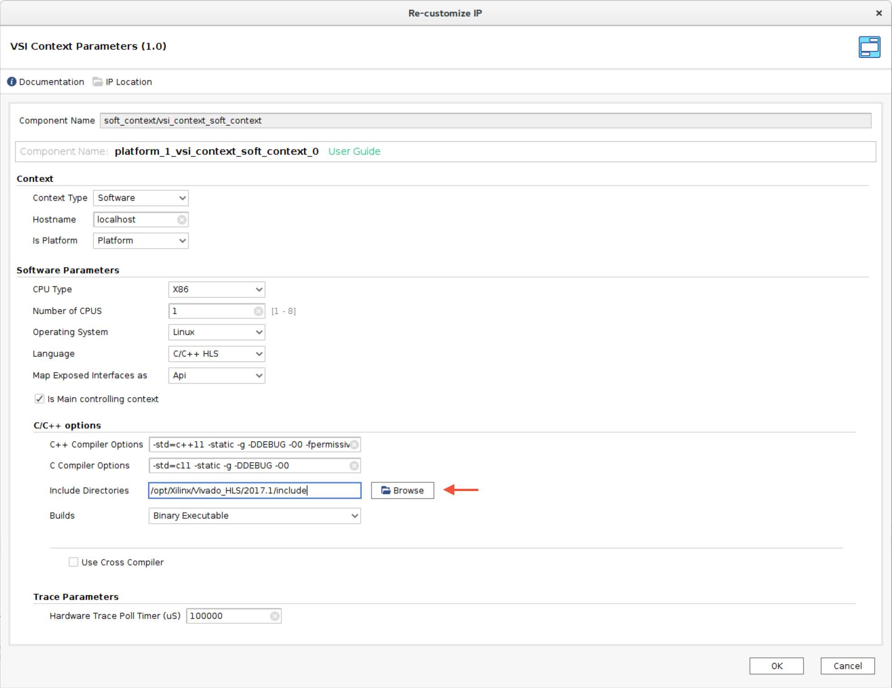
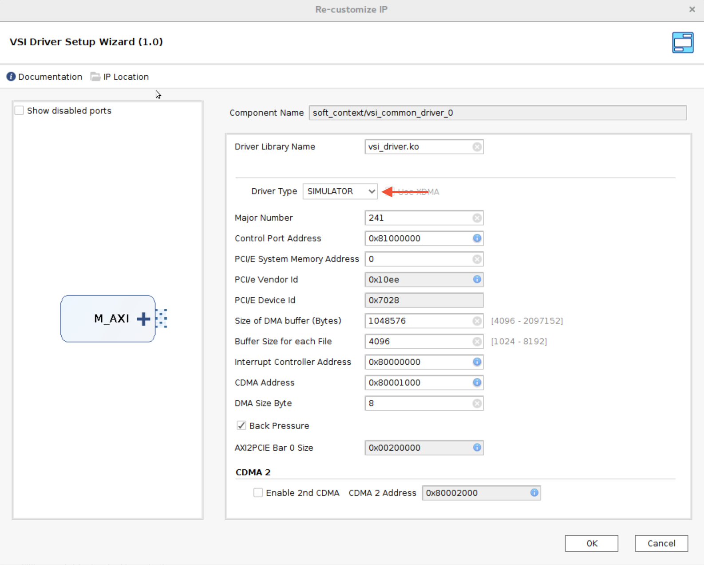
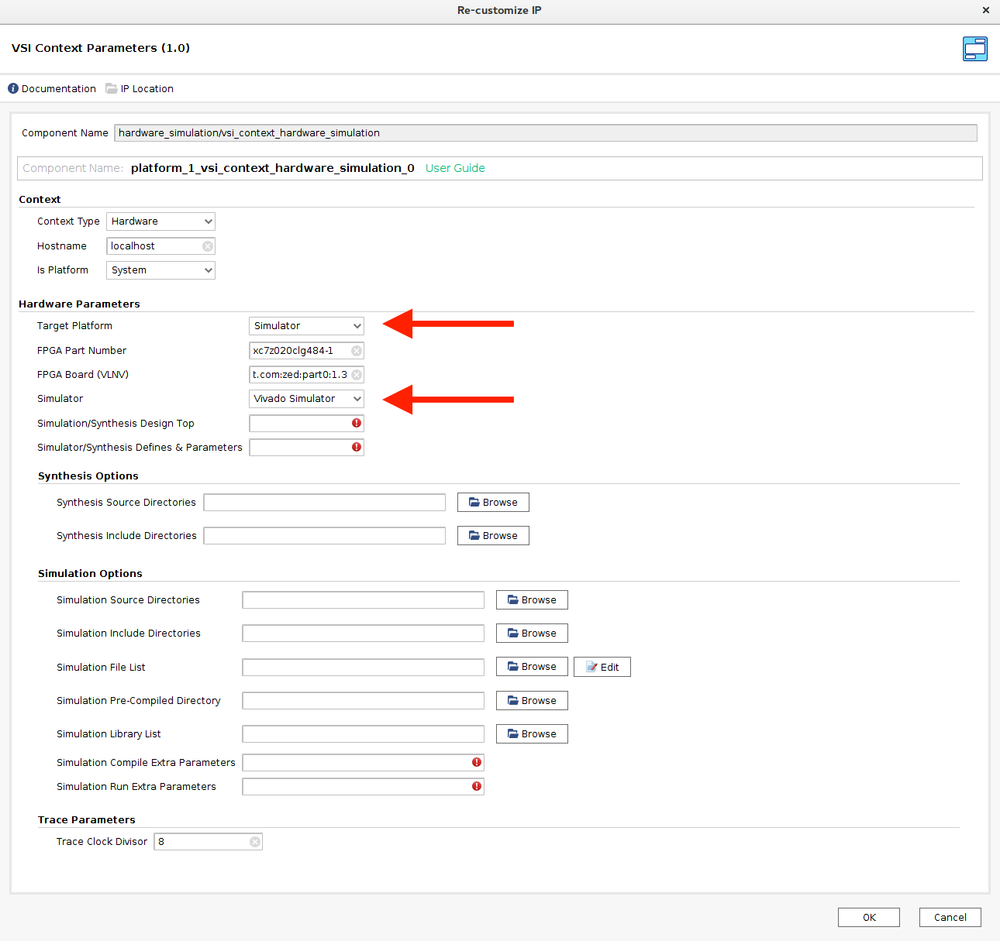
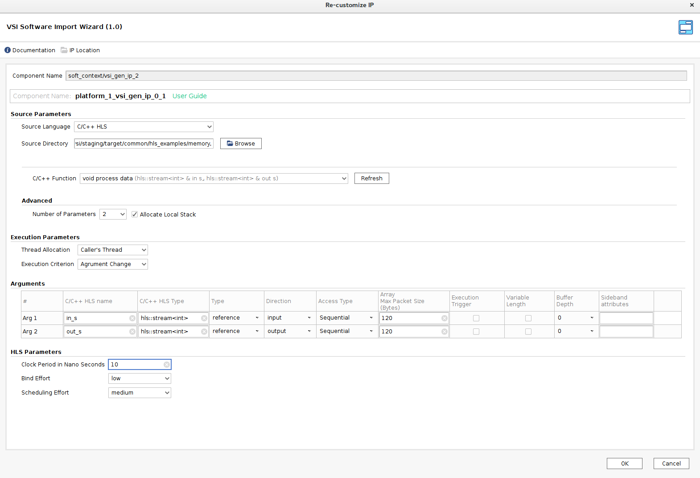
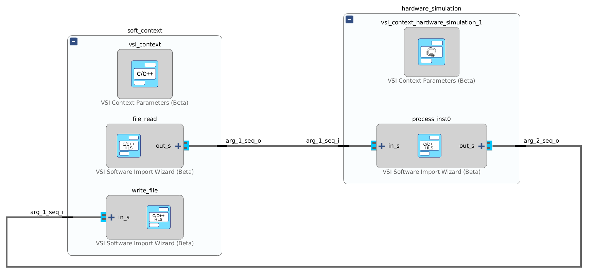
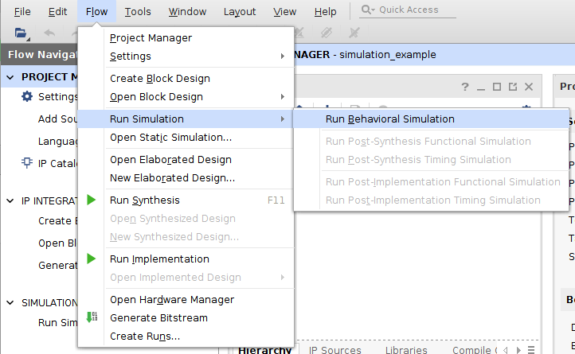
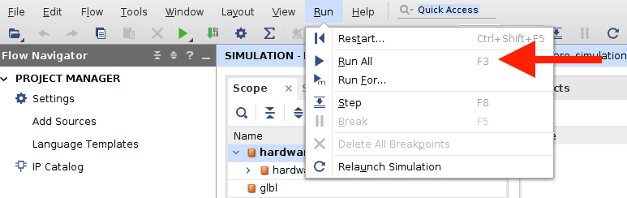

VSI Simulation
This section describes how to build simulation in Visual System Integrator. Current example reads file from the host machine handled by simulation system and writes back the result.
Create VSI project
From menu bar, select File -> New project

Specify Project name and location as shown in figure below.

"Default Part" window: select "Boards", ZedBoard and press Next -> Finish.

Create Platform
menu bar -> Flow -> Create Plaform, press OK in the appeared window.

Open Diagram that has been created at the previous step with your platform (default name: platform_1).
Software Context
menu bar -> Flow -> Create Context Select Type: Software, and setup name of new context, for example: soft_context

Double click on software context and add path to Xilinx header Include Directory. In exempel it is: /opt/Xilinx/Vivado_HLS/2017.1/include

Open Software context (soft_context). Add “VSI Driver Setup Wizard” IP.

Set Driver Type to SIMULATOR

Hardware Context (Simulation)
**menu bar -> Flow -> Create Context Select Type: Hardware, and setup name of new context, for example: hardware_simulation
In “context parameters” select the following parameters: Target platform: Simulator Simulator: Vivado Simulator

Open Hardware context (hardware_simulation). Add “VSI Xilinx AXI BFM” IP, make next connections: gen_clk <-> m_axi_aclk, gen_reset <-> m_axi_aresetn

Contexts cross connection
Open platform diagram to connect “VSI Driver Setup Wizard” M_AXI and “VSI Xilinx AXI BFM” plat_axi ports.

Save all your changes.
Create System
menu bar -> Flow -> Create System, press OK in the appeared window.
Open system (default name system_1) and import platform: menu bar -> Flow -> Import Platform

Open Software Context (double click at the empty space in software context)
Add "VSI Software Import Wizard" IP component. Open Re-customize IP window (double click) at the source directory, select path to vsi/staging/target/common/hls_examples/memory and press Refresh. Set the following parameters:
- Function : read_file_send
- Arg1 Direction : output

Create VSI Software IP component with the following parameters:
- Function : recv_write_file
- Arg1 Direction : input
Create VSI Software IP component with the following parameters:
- Function : process_data
- Arg1 (in_s) Direction : input
- Arg2 (out_s) Direction : output

Make connection between components:
Read_file {out_s} <-> {in_s} process {out_s} <-> {in_s} writefile

Save your changes.
From system diagram drag and drop process ip block to the simulation context space.

Now process is located at the hardware simulation context.
System generation
- Compile platform : menu bar -> Flow -> Compile Platform
- Generate system : menu bar -> Flow -> Import Platform
- Build HLS system : menu bar -> Flow -> Build HLS
- Build Software : menu bar -> Flow -> Build HLS
Run Simulation
Open Xilinx Vivado and execute script
Go to
Generate test file
dd if=/dev/random of=infile.txt bs=1 count=64
Launch simulation from Vivado. menu bar -> Flow -> Run Simulation -> Run Behavioral Simulation

Run simulation menu bar -> Run -> Run All

Start program from the command line
Go to project_location/vsi_auto_gen/sw/system_1/build/soft_context and run the program:
./bin/soft_context
In this example input file (infile.txt) has to be located in the directory where generic program is executed.
Break simulation
menu bar -> Run -> Break
Output.txt file (similar to input.txt) is created as a result of the simulation.